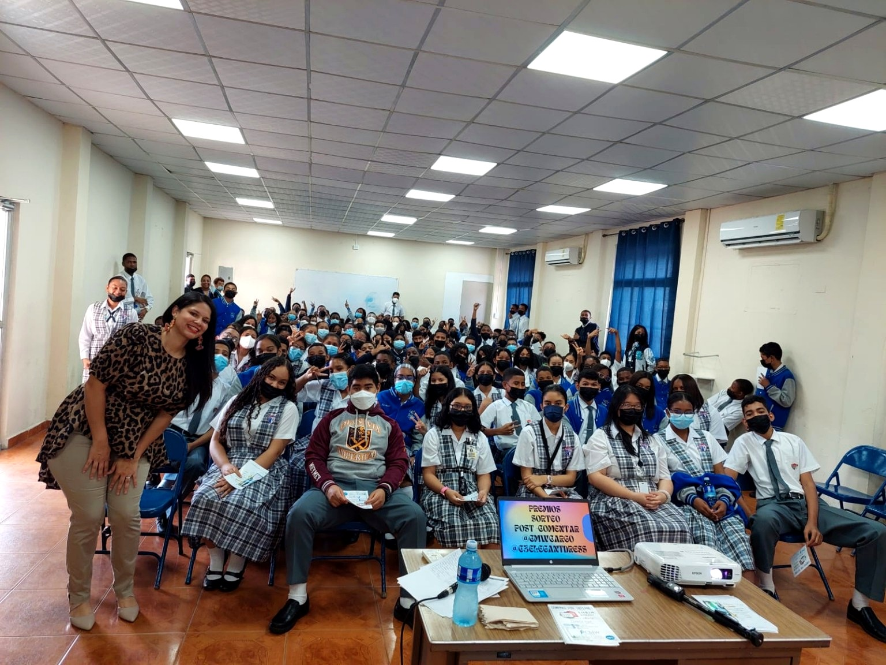
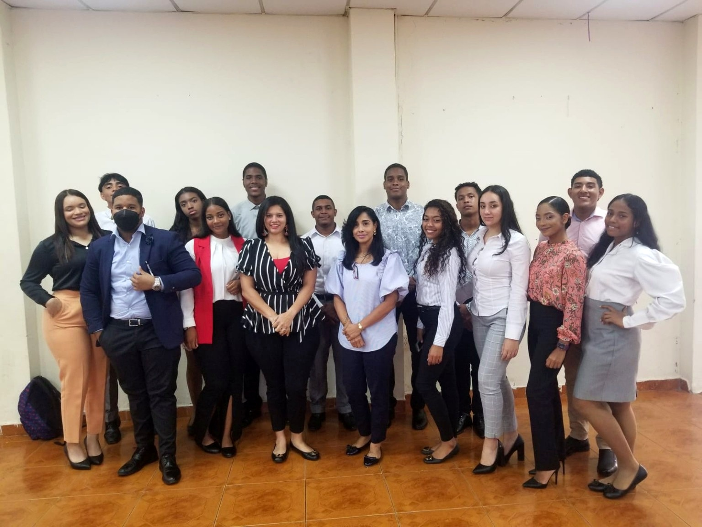
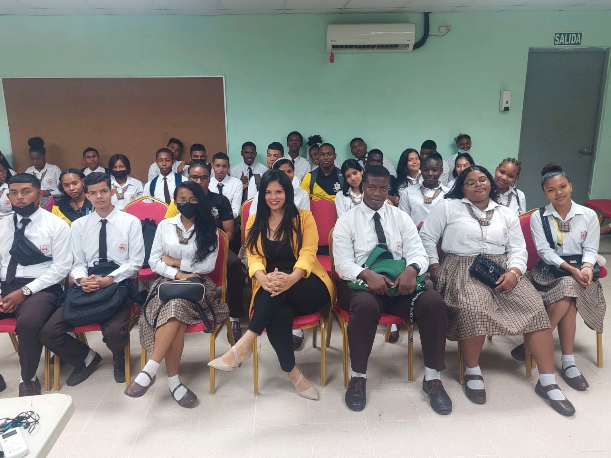
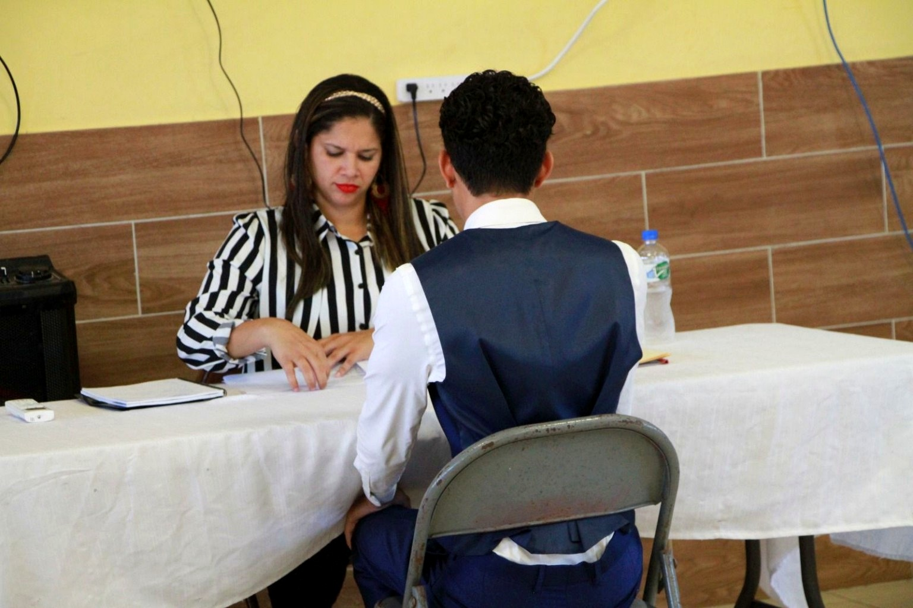
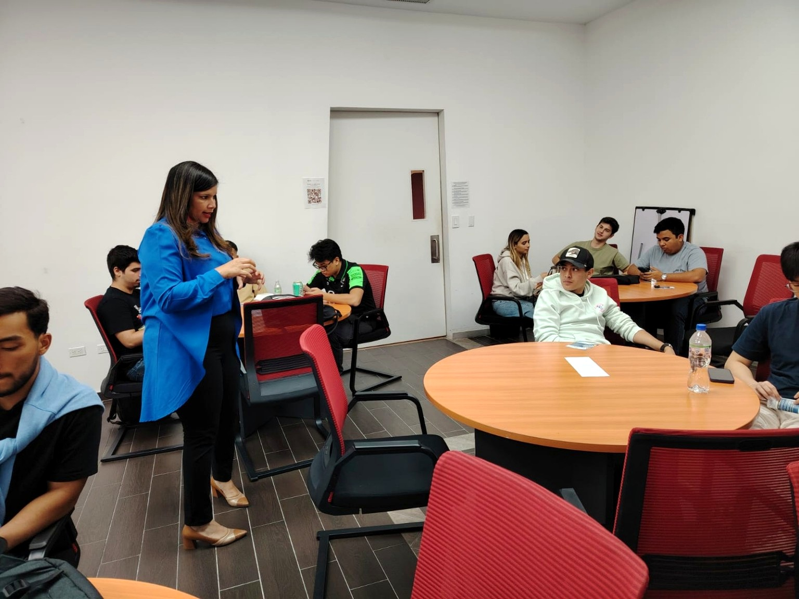
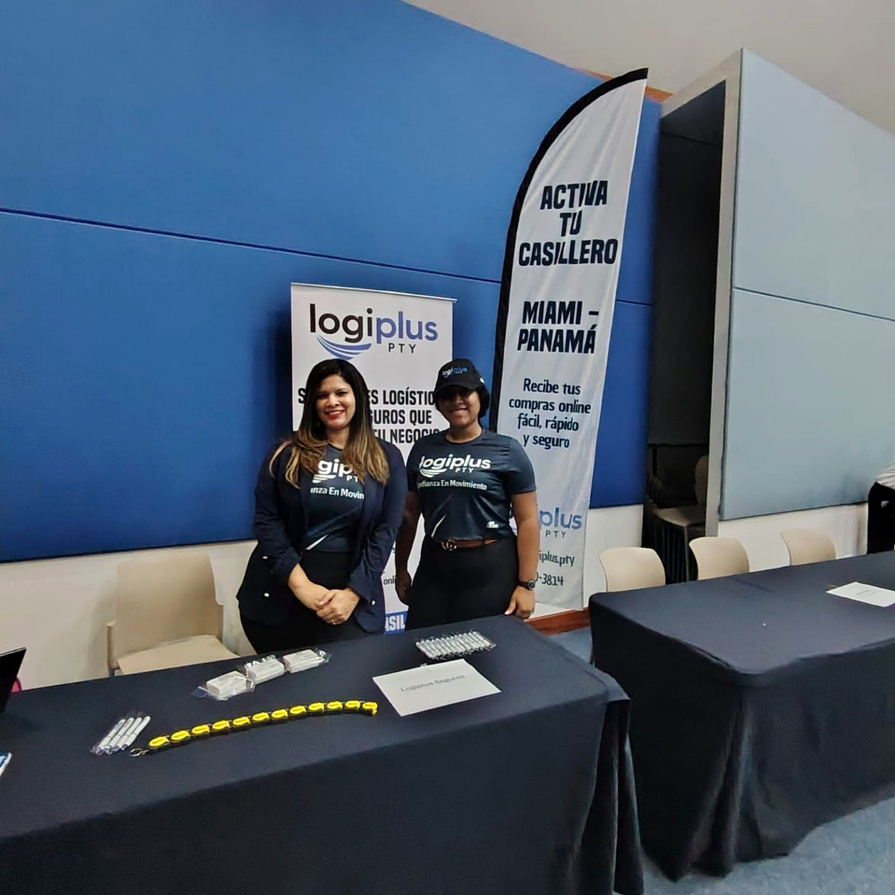
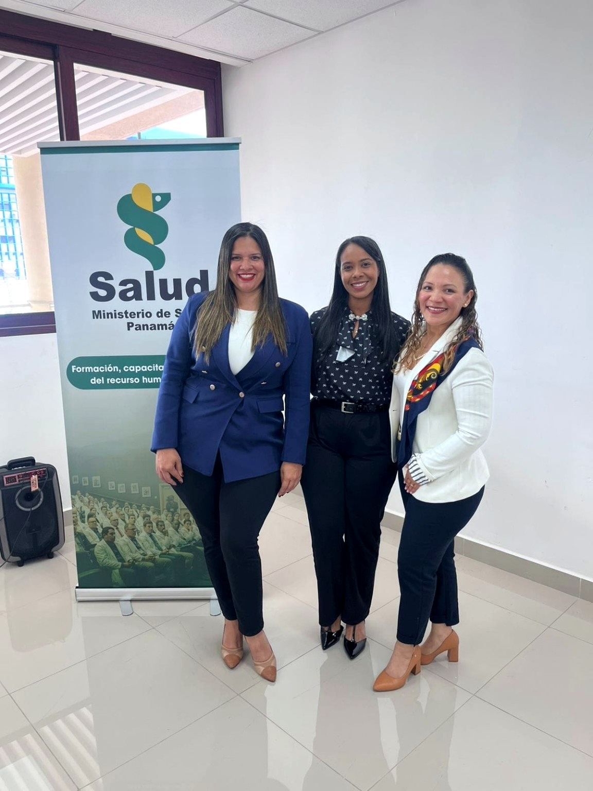
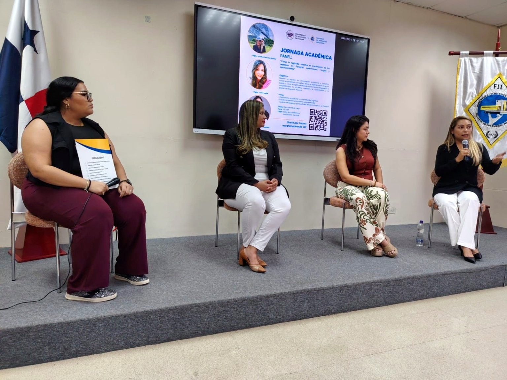
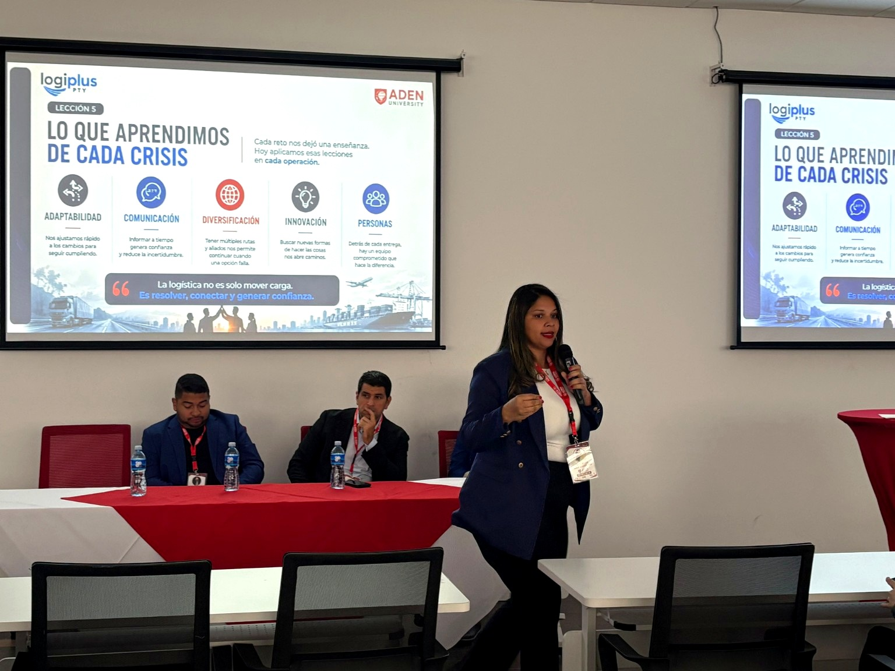

Formación
Conferencias y espacios académicos que acercan experiencia profesional a nuevas generaciones.
En LogiPlus entendemos que la logística también conecta oportunidades. A través de conferencias, talleres y espacios de formación, compartimos experiencia y conocimiento para fortalecer competencias, inspirar a jóvenes y aportar al desarrollo profesional de nuestra comunidad.
Las actividades documentadas reúnen experiencias de orientación profesional, empleabilidad, emprendimiento, formación logística y servicio al cliente. Cada encuentro refleja una forma concreta de aportar conocimiento y experiencia a estudiantes, jóvenes y profesionales.
Conferencias y espacios académicos que acercan experiencia profesional a nuevas generaciones.
Talleres y entrevistas simuladas para fortalecer preparación, competencias y confianza.
Logística, emprendimiento y servicio al cliente como herramientas para el desarrollo profesional.
Una selección cronológica de las actividades aprobadas para publicación web.

Compartiendo con estudiantes graduandos herramientas de motivación, emprendimiento y preparación profesional para su futuro laboral.

Preparando a los estudiantes mediante entrevistas simuladas para fortalecer sus competencias y confianza antes de ingresar al mercado laboral.

Conferencia motivacional sobre emprendimiento y superación personal, inspirando a los estudiantes a creer en su potencial y comprender que, con esfuerzo, actitud y constancia, es posible construir un futuro exitoso, aun cuando los recursos sean limitados.

Preparando a los estudiantes de duodécimo grado para enfrentar con confianza sus primeras oportunidades laborales mediante entrevistas simuladas y asesoría profesional.

Conferencia sobre los componentes de la logística, compartiendo conocimientos y experiencias con estudiantes universitarios para fortalecer su formación y visión del sector.

Participación en la Feria Universitaria, compartiendo conocimientos sobre logística y motivando a los estudiantes a descubrir las oportunidades que ofrece esta industria.

Conferencia sobre Servicio al Cliente, compartiendo herramientas para fortalecer la atención, la comunicación y la excelencia en el servicio a los usuarios.

Participación en una jornada académica para compartir experiencia sobre el papel de la logística en el crecimiento empresarial, la competitividad, la eficiencia operativa, la sostenibilidad y la gestión de riesgos en Panamá.

Participación en el foro “Logística en tiempos de crisis: desafíos, decisiones y soluciones que mueven al mundo”, compartiendo experiencias y aprendizajes sobre la toma de decisiones y la gestión logística ante escenarios de crisis.
Conoce nuestras soluciones logísticas y cómo podemos acompañar tu próxima operación.